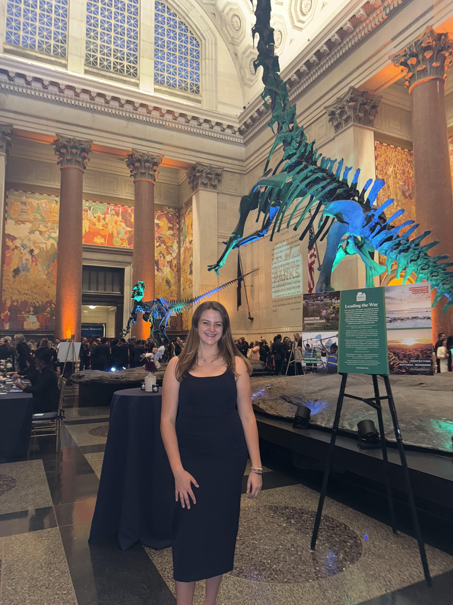

Grace Croken is an information professional pursuing her MS in Library and Information Science from Pratt Institute, and holds a BS in Biological Anthropology from Arizona State University. With a focus on information freedom, Grace believes that the national parks must comprehensively reflect their complex histories. Inspired by the intersections of landscape and human history, she hopes to expand access to the stories that shape our shared heritage. She is a New Jersey native and grew up exploring the Sandy Hook unit of Gateway National Recreation Area.